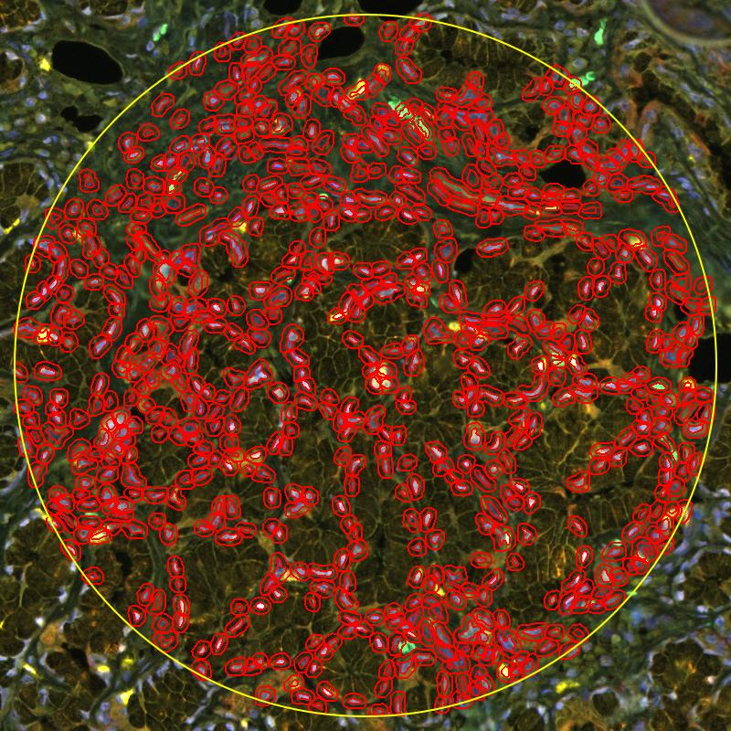
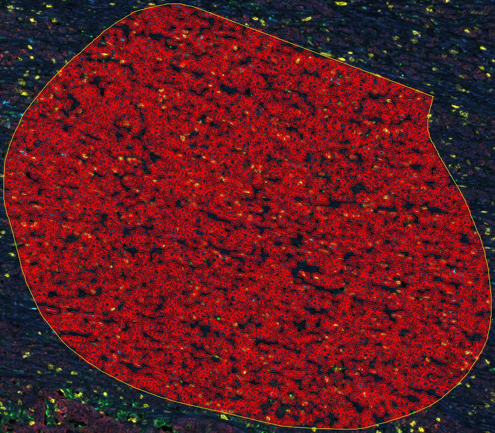
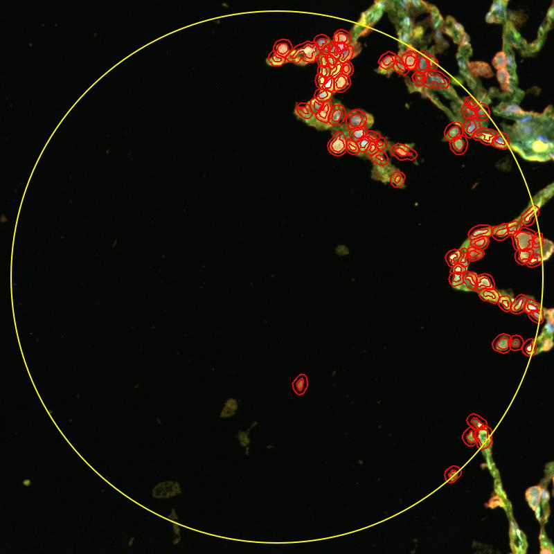

项目全流程 / 当前进度
三张真实 ROI，
工程链路已验证。
QuPath 0.8 源码版 PathPilot 已完成真实模型生成、操作者审查、冻结已有细胞计算和 Harness 审计。三张 ROI 的数值与独立参考一致，保存重读通过；检测与七通道测量来自另行审查的原生流程。科学准确性、专家反馈和系统级隔离继续保留为未验证。
Phase 2R · 部分完成
模型生成、冻结统计、独立参考与持久化已验证。下一步确认检测质量与科学规则、验证隔离，并完成专家反馈后的修订评价。
实际 PathPilot 统计、独立核验和保存重读通过
源码 coder／0.7 兼容／基础代码分别通过；GUI 和 CLI 证据另行记录
完整候选经操作者审阅；冻结已有测量计算，非科学准确性或隔离证明
三张片子的圈选区域
真实选区局部 · 点击图片放大



从已保存的原选区直接导出，保留黄色选区边界与红色检测轮廓。仅展示局部，不包含软件侧栏、文件名或患者标识；工程显示不代替科学准确性验证。
播放一次，看懂现在能做什么
可暂停、逐步查看，最后停在当前能力边界
这是根据已核对材料编排的流程动画。播放不会运行 Python、调用模型或分析切片；演示走完也不会改变上面的项目进度。
- 读取模拟名单
- 安排固定任务
- 按规则筛选
- 计算数量比例
- 保存结果记录
内置模拟名单 · 圆形是对象示意，不是识别出的细胞
名单里有 7 个对象，类别提前给定。
人工代码版本演示 · 只保存和检查，不执行
第一版：人工准备
pixel > 128任务要求“大于等于 128”，先保存任务和合成像素。
本地真实文件信息 · 文件卡片示意
已找到 3 张 .qptiff；这一步没有检测细胞。
已知合成七通道图 · 安装版 QuPath 0.7.0 实测
五 marker 均测量自像素；每个 marker 的阳性数量为 1，阈值仅用于合成测试。
这张页面不运行分析。真实 ROI 工程流程已另行核验，科学阈值与生物学解释仍待专家确认。
固定统计 · 步骤 1 / 5
读取内置的 7 个对象
没有输入真实图像时，演示会读取预先准备的模拟名单。CD8、PD-L1 等类别已经写在名单里。
从基础程序，到完整研究
按工作依赖展示，阶段不代表相同工作量
- ✓
离线计算与管理
固定统计、权限、任务和审计
模拟范围已验证 - ✓
代码记录与预检
任务、源码与历史版本对应
记录与预检已验证 - 03
任务与运行边界
任务绑定已验证；隔离仍待验收
当前继续核验 - 04
AI 生成与 ROI 运行
真实工程链路通过，科学评价待补
部分完成 - 05
专家反馈后修订
具体反馈、再运行和前后比较
待验证 - 06
比较与研究结论
质量、人工时间、成本与多 Agent
待开展
三张真实 ROI 的模型计算、独立数值参考、快照与审计、保存重读均通过。旧固定报告另经真实数据 CLI 核验，未知阈值保留 unknown。下一步验证科学规则和隔离；长路径修复尚未写入维护源，界面恢复仍待核对。
哪些环节已经接通？
沿着每条线看，避免把局部成功当成全流程完成
源码版 PathPilot
三张真实切片 ROI 已实测
原生检测与测量
工程流程通过，准确性未验证
固定统计与研究
已实现与计划分开记录
三张真实 ROI 已在实际 QuPath—PathPilot 链路计算，原始图像与逐细胞数据仅留本地。运行成功与病理准确性分别需要证据。
下一步，补齐科学依据与运行边界
已有工程结果 → 专家参考、隔离及修订评价
每一步，怎样才算完成
点击展开 · 当前准备阶段默认展开
01离线计算与任务管理
指定范围已完成
02研究代码记录与预先检查
指定范围已完成
已有：分析要求、合成输入、源码与反馈的版本关系，外部文本导入，文件完整性检查，以及首次模型输入整理。
范围：两版源码和修改意见来自人工演示；0.5 来自固定参考程序。所有待测试代码仍是 NOT_EXECUTED，不是实际执行结果。
03正式任务、输入和运行边界
部分完成
已验证：三张真实图像的像素读取、面积 ROI、原生 DAPI 检测与七通道测量；任务规格、实际测量键、图像与区域绑定。原项目保持不变，结果保存在测试项目副本。
继续核验：检测准确性与科学阈值的专家依据、系统级代码隔离，以及桌面恢复。当前原生检测是单独审阅的上游流程，PathPilot 不自动检测或保存项目。
切片标识、原始图像、逐细胞数据和截图仅留本地；网页只展示脱敏的工程验证范围。
04第一次 AI 生成与实际分析
工程流程已验证
已验证：真实模型生成纯计算函数；完整源码经操作者审阅后，从实际 PathPilot 面板冻结三个 ROI 的已有细胞输入并分别执行。四个独立参考用例、细胞 ID 和几何、数值参考、来源及结果审计、重复导入与保存重读通过。
仍缺：专家科学评价及经过验证的隔离环境。操作者审阅不等于独立病理专家审查，工程统计一致性不等于检测或诊断准确。
05专家反馈、代码修订与重新评价
待实现
要做：专家指出一个具体问题，模型在允许范围内修改代码，再运行并比较修改前后结果。
完成依据：初版结果、明确反馈、修订代码、新结果及误差。改好、没变或变差都要保存；仅有两份代码文件不算跑通。
06比较实验与研究结论
待开展
要做：比较人工固定方法、单次 AI 生成和加入核验反馈的方案；按题目要求再加入多 Agent，与单 Agent 在可比预算下比较。
完成依据：预先确定任务、指标和数据划分，记录质量、全部失败、人工时间与资源成本。反馈用材料和最终测试材料分开，不预设多个 Agent 一定更好。
并行的 QuPath 工作：真实连接、只读结果展示、批准后写回与恢复分别验收，不要求先完成写回才开展研究。
进度有依据，材料找得到
本地链接需要与项目目录一起保留
直接打开相关材料
- 架构入门与一分钟汇报稿 ↗从零理解模型、Agent、工具和 Harness 的分工。
- 阶段成果与导师沟通指南 ↗目前完成了什么，还缺什么，要问老师什么。
- 10 月 19 日开发交接与测试依据 ↗两个 Python 环境各 71 项测试，以及安装后检查的范围。
- 正式开发路线与验收条件 ↗阶段名称、实机检查和研究执行的前置条件。
- 真实切片信息与预览文件夹 ↗3 张切片的尺寸、通道和本地缩略图路径。
最近的进展
- 三张真实 ROI 的 PathPilot 统计与保存重读通过
真实模型生成、审查运行、冻结细胞、独立数值核验和两阶段 Harness 审计通过。修复空输入异常用例契约及 JavaFX 样式启动参数；15／10／75 项 Python 检查、源码 GUI 与 0.7 CLI 回归通过。固定报告已通过；桌面恢复和长路径修复落地仍待完成，科学准确性未验证，本条只记录工程验证范围。
- 停用源码版重复加载的旧 PathPilot 扩展
正常关闭旧实例，将 0.7 PathPilot JAR 移出扩展目录并校验备份，保留 0.8 内置面板。桌面连接器失败且系统拒绝桌面输入，用户桌面重启尚未完成；未将隔离窗口当作用户可见结果。该历史事件保留当时的验证范围，最新结果见本页当前定位。
- Harness 已管理 QuPath skill 与冻结快照记录
skill 经摘要校验和 Harness 任务提供给 coder；审查后冻结已有细胞，结果核对后保存审计。主线 14 项、0.7 回归 9 项及源码版合成 GUI 验收通过；现场测量修改后回放仍使用原值。真实模型／切片和任意代码隔离待验收。当时原目录写入受限；后续验证与发布记录单独保留。
- 代码整理：明确维护源并检查副本漂移
以 QuPath 0.8 pathpilot-coder 为维护源，统一同步 coder、skill 与契约副本；64 个受控文件一致，0.8 回归 9 项、0.7 回归 8 项通过。未改变科学规则或新增真实模型／切片验收。code 原位写入仍被拒绝；该次原位发布失败；本页当前验证范围已单独更新。恢复命令见代码整理记录。
- 新增完整代码说明与周三最小验证指南
按当前源码逐块说明 QuPath 接入、规则统计、Harness、研究预检、契约、探针和测试；附最小命令、预期 3／4 个对象的不同场景、报告查看及导师自查。当天重新通过 75 项测试和安装版合成图链路；没有改分析算法、打开真实片或推进模型／动画终点。
- QuPath 单 ROI 首版完成合成图验证
新增 qupath_bridge：可信固定脚本 → 单 ROI 检测／副本测量 → 冻结快照 → Harness roi.summary → 数量、初步性状、CSV 与审计。安装版 0.7.0 实测得到 3 个已知合成细胞；75 项 Python 和 16 项安装检查通过。按用户选择，真实切片稍后验收；新增合成 ROI 动画，原 AI／真实切片终点保持不变。
- 本周最小任务：ROI 计数与初步性状
将五 marker 表达和有依据的表型说明纳入本周目标，架构 §1.7 明确输入、输出及验收。现有面板无 Ki-67 等增殖指标，不将信号强判作高增殖；真实分析仍待实现，阶段与动画终点保持原有证据。
- 明确 QuPath 主线与 Harness 边界实施
安装基线 F:\QuPath-0.7.0 的核心／GUI JAR 为 0.7.0，runtime 声明 Java 25.0.2；PathPilot 源码为 0.8.0-SNAPSHOT，移植待验证。架构 §1.5–§1.6 写明优先接入点、统一执行入口和越界拒绝验收，现有阶段及动画终点不变。
- 已登记 7 通道映射
用户 INFO 日志：0 DAPI；1 CD20／Opal 480；2 PDL1／Opal 520；3 CD8／Opal 570；4 CD23／Opal 620；5 PANCK／Opal 690；6 Autofluorescence。完整来源、PD-L1 别名和适用边界见架构 §1.4；登记不表示检测完成，动画终点不变。
- 新增 QuPath 与 PathPilot 技术原理报告
沿真实调用链解释模型、StarDist、阈值、空间分析和导出；报告为源码静态阅读，不表示实际模型调用、检测或集成完成。第二次谈话目标收敛到单 ROI Groovy 计数，动画保持原能力终点。
- 离线研究输入与记录检查完成
补上外部源码导入、文件检查和模型输入准备，保留本地测试与安装验证证据。
- 找到并读取 3 张真实切片
已查看元数据和缩略图；尚未检测细胞或判断标记阳性。
- 加入能力动画与文档阅读区
三种能力可逐步播放，根目录 Markdown 可分组搜索并阅读全文；后续开发同步维护进度、动画和文档快照。
- 网站上线，增删改后必须同步
GitHub Pages 首次部署成功，公网主页返回 HTTP 200；版本管理与架构已明确要求同次交付更新看板、正文、下载与公网内容，并核对部署。研究阶段与动画终点仍按原有证据。
和老师沟通时，可以这样说
“源码版 PathPilot 已在三张真实 ROI 上完成模型生成、审查后冻结统计、独立数值核对与 Harness 审计，保存重读一致。接下来补充专家检测参考和科学规则、候选隔离，以及反馈修订前后的效果评价。”
QuPath 与 PathPilot，到底怎样工作
16 节通俗源码报告：从一句话到模型选工具、检测对象、阳性阈值、空间统计与 Excel 导出，附真实调用链和源码定位。
2026-10-21 源码原理核对；2026-10-26 已将面板适配成扩展并通过合成图 GUI 验收，未调用远程模型。可在线阅读、下载原文或随全部文档打包。
代码结构，一张图看懂分工
点选模块关系图与代码目录，沿固定统计、研究预检和 QuPath 探针路线，查看现有技术和实现边界。
2026-10-27 核对：10 组目录、160 个文件的模块点选、搜索、跨页和四种屏幕尺寸检查通过；结构检查与病理科学验证分开记录。
Harness 如何管理 skill 与执行记录
QuPath skill 已注册为受控资源：校验、源码上下文和任务审计先于模型请求；人工审查后，冻结细胞快照与结果也保存到 Harness。
2026-10-27：三张真实 ROI 的 skill 任务、冻结计算与结果审计通过；当前入口不自动检测，任意代码 OS 隔离仍未验证。
PathPilot：当前入口与历史基线
0.8 源码入口已验证真实模型生成、操作者审查及三个 ROI 的冻结统计。0.7 固定分析面板的 GUI 证据使用合成图；旧固定报告另经干净 0.8 CLI 核验真实数据。
原生检测是另行审阅的上游流程；科学准确性、专家反馈及系统级隔离仍待验证。公开页面仅展示脱敏范围。
从圈选到数细胞：代码阅读路线图
先用最简单的话理解切片选区如何得到细胞数量，再按真实调用顺序阅读 QuPath 界面、代码生成、人工审查、细胞快照、Harness 和测试。
2026-10-27 按当前源码核对；PathPilot 当前统计已有细胞对象，检测由上游另行完成。
周三前，把代码讲清楚
完整解释每个模块、关键文件和实际调用链；区分程序结果与科学验证，并按步骤运行一次 QuPath 合成图最小演示。
2026-10-26 源码核对及复跑通过。面向 10 月 28 日导师沟通，附报告查看、故障定位和汇报自查。
项目文档已整理到独立页面
按用途浏览、搜索和阅读全部 Markdown，也可以下载单份或打包下载。
公网发布：2026-10-21 已完成 GitHub Pages 首次部署，公网主页实测返回 HTTP 200，首次部署工作流成功。后续增删改内容必须在同次交付运行同步脚本并核对线上结果，部署记录可查看。仅发布展示页与文档；研究阶段、缺项与能力动画终点保持原有证据范围。查看连接与自动更新说明。
2026-10-21 网页自检通过：三个动画场景、四种屏幕尺寸、文档搜索跳转、全部 MD 与 ZIP 下载内容一致；本地网页检查记录仅证明页面行为，不作为病理分析、模型调用或候选执行证据。